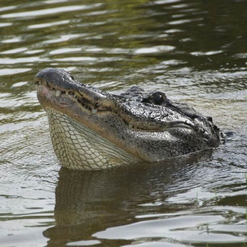

Como todos os répteis, são ectotérmicos e possuem o corpo coberto por escamas. Habitam rios, lagos e pântanos. São excelentes nadadores, permanecendo com as patas próximas ao corpo enquanto ondulam lateralmente o corpo e a cauda para se locomover. Em terra também são muito rápidos, andando com a barriga levantada e as patas sob o corpo. Podem chegar a 6,5 m de comprimento e viver de 80 a 100 anos.
Conservação
Para entender melhor e pensar na conservação da espécie em ambientes alagáveis da Amazônia, o Instituto Mamirauá realiza capturas científicas de jacarés-açu. Na Reserva Mamirauá, as capturas científicas ocorrem em diferentes épocas do ano, desde 2004. As capturas têm como objetivo a obtenção de dados que permitam avaliar, a longo prazo, a estrutura das populações de jacaré-açu da Reserva Mamirauá.
Curiosidades

fonte: Fiocruz
Os jacarés não conseguem pôr sua língua para fora da boca nem mastigar alimentos;
O jacaré usa sua cauda como impulso na hora de nadar e de caçar animais;
Os crocodilos são os maiores répteis da natureza. Eles medem cerca de 8 metros. Na época dos dinossauros, chegaram a ter 30 metros de comprimento;
Os jacarés passam bastante tempo expostos ao sol com a boca aberta. Isso porque a pele da boca, que é fina e rica em vasos sanguíneos, absorve o calor com mais rapidez e eficiência;
Os crocodilos possuem de 74 a 80 dentes. Com o tempo, alguns acabam quebrando e caindo, mas outros novos nascem no lugar. Um crocodilo pode ter de 2 a 3 mil dentes durante uma vida;